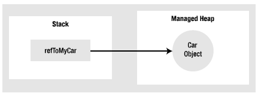

To frame the topics covered in this chapter, it is important to further clarify the distinction between classes, objects, and references. Recall that a class is nothing more than a blueprint that describes how an instance of this type will look and feel in memory. Classes, of course, are defined within a code file (which in C# takes a *.cs extension by convention). Consider a simple Car class defined within a new C# Console Application project named SimpleGC:
// Car.cs public class Car { public int CurrentSpeed {get; set;} public string PetName {get; set;} public Car(){} public Car(string name, int speed) { PetName = name; CurrentSpeed = speed; } public override string ToString() { return string.Format("{0} is going {1} MPH", PetName, CurrentSpeed); } }
Once a class is defined, you can allocate any number of objects using the C# new keyword. Understand, however, that the new keyword returns a reference to the object on the heap, not the actual object itself. If you declare the reference variable as a local variable in a method scope, it is stored on the stack for further use in your application. When you wish to invoke members on the object, apply the C# dot operator to the stored reference:
class Program { static void Main(string[] args) { Console.WriteLine("***** GC Basics *****"); // Create a new Car object on // the managed heap. We are // returned a reference to this // object ("refToMyCar"). Car refToMyCar = new Car("Zippy", 50); // The C# dot operator (.) is used // to invoke members on the object // using our reference variable. Console.WriteLine(refToMyCar.ToString()); Console.ReadLine(); } }
Figure 8-1 illustrates the class, object, and reference relationship.
Figure 8-1 References to objects on the managed heap
Note Recall from Chapter 4 that structures are value types that are always allocated directly on the stack and are never placed on the .NET managed heap. Heap allocation only occurs when you are creating instances of classes.